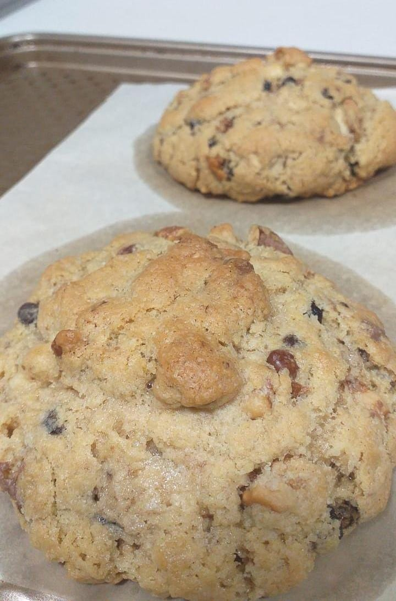
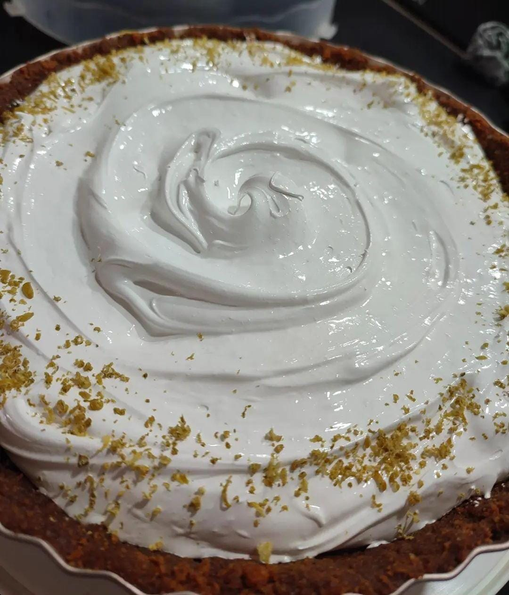
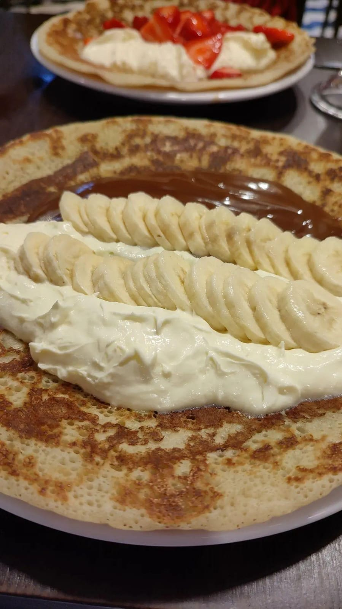

Galletas con chispas de chocolate
Ingredientes
- ¼ taza de azúcar orgánica
- ¾ taza de azúcar morena
- ½ taza (1 barra) de mantequilla, suavizada
- 1 huevo grande, a temperatura ambiente
- 1 cucharadita de extracto de vainilla
- ½ cucharaditas de bicarbonato de sodio
- 1¼ tazas de harina de trigo integral repostera
- ½ cucharadita de sal
- 1 taza de chocolate oscuro cortado, intente usar 70% o más alto
- 1 taza de nueces cortadas
Preparación
Precaliente el horno a 375°. Prepare 2 bandejas para hornear con papel pergamino. Bata el azúcar y mantequilla hasta que esté ligera y cremosa. Añada el huevo y vainilla. En un recipiente aparte, mezcle la harina, bicarbonato y sal. Mezcle con los ingredientes húmedos hasta que estén bien combinados. Añada las chispas de chocolate y nueces cortadas. Use una cuchara para vertir sobre las bandejas para hornear preparadas. Aplane un poco y rocíe con la sal en flecos, si la usa. Hornee por 8-10 minutos. Deje enfriar un poco y transfiera a un estante.
Pie de Limon
Ingredientes
- 50 gramos de Azúcar en polvo
- 50 gramos de Mantequilla sin sal
- 3 Limones
- 3 Yemas de huevo
- 2 ½ Tazas de Harina
- 1 Taza de Azúcar flor
- 1 Huevo
- 1 taza Agua (si es necesario)
- 2 Huevos
Relleno del Pie limón
Masa del Pie
Para el merengue
Preparación
Para el relleno del pie de limón
En un bol, combine la harina de maíz y el azúcar en polvo. Mida una taza de agua fría y agregue lo suficiente al recipiente hasta hacer una pasta. Coloca la ralladura de limón a la mezcla anterior. Recuerda solo rallar la piel amarilla, no la parte intenar blanca de limón (esta aporta un sabor amargo y dañaria la crema del pie) Agregar el jugo de limón y el resto del agua. Calentar suavemente a fuego lento. Cocine hasta que espese, mezclando todo el tiempo para evitar los grumos. Para finalizar, añade la mantequilla, luego las yemas de huevo, una por una. Remueva y calienta con el fuego bajo por 1 minuto más, luego retire de la cocina.
Para Masa del Pie de Limón
En un tazón coloca la harina, el azúcar, el huevo, y la mantequilla. Comienza a mezclar los ingrientes hasta lograr tener una masa compacta. Sobre una superficie ligeramente enharinada, estira la masa tener un grosor de una moneda de 1 €. Cuidadosamente colocar sobre el model que vamos a utilizar. (apto para llevar al horno)
Cocción del Pie de limón
Cubra la base de la tarta con papel de hornear y llénelo con las alubias o garbanzos. Hornear durante 10 a 12 minutos, o hasta que la masa esté dorada. Retire el papel para hornear y los granos. Nuevamente lleva la masa del pie de limón al horno durante 4 a 5 minutos{ Rellena la tarta con la crema de limón que hemos hecho anteriormente. Dejar enfriar por lo menos 60 minutos en la nevera (cuanto más tiempo mejor), por lo que el merengue no se deslizará cuando se cuchara por encima.
Panquecas
Ingredientes
- 500 ml de leche
- 250 gramos de harina 0000
- 100 gramos de Maizena>
- ¼ cucharadita de sal
- 20 gramos de mantequilla
- 4 bananas
- 250 gramos de dulce de leche
- Granas multicolores
- 1 cucharada de coco rallado
- 100 gramos de crema chantilli
Preparación
Coloca la leche en el vaso de la licuadora. Incorpora los huevos, la mantequilla derretida, la harina, la sal y la maizena previamente tamizadas. Licua hasta integrar todos los ingredientes. Deja reposar en la heladera durante 1 hora. Calienta una sartén con un poco de mantequilla. Coloca un poco de la mezcla bien fría y cocina de ambos lados hasta apenas dorar. Rellena con un poco de dulce de leche, coloca en el centro la banana y por arriba la crema chantilli.